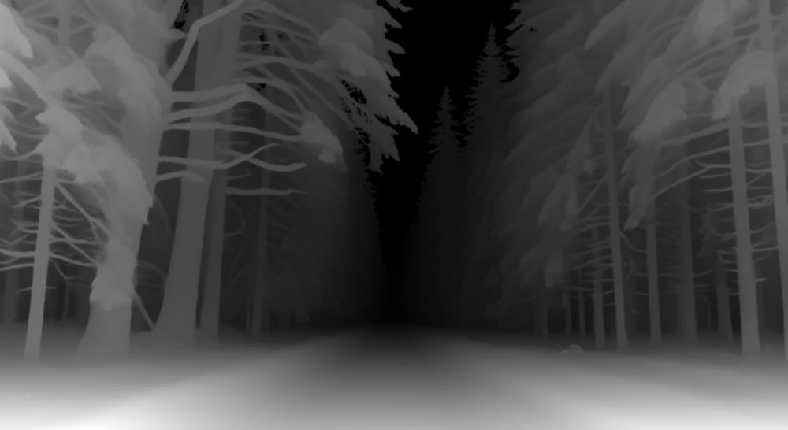
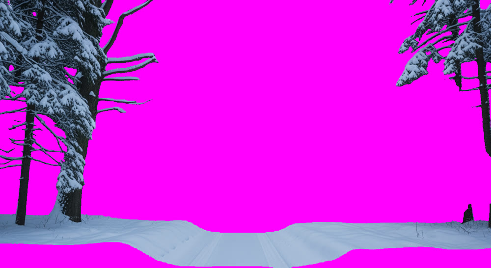
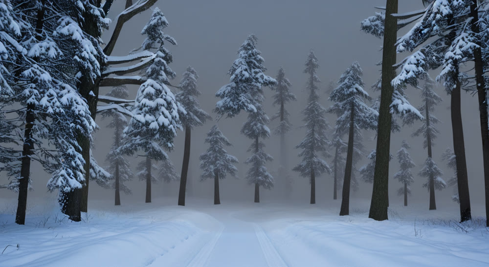
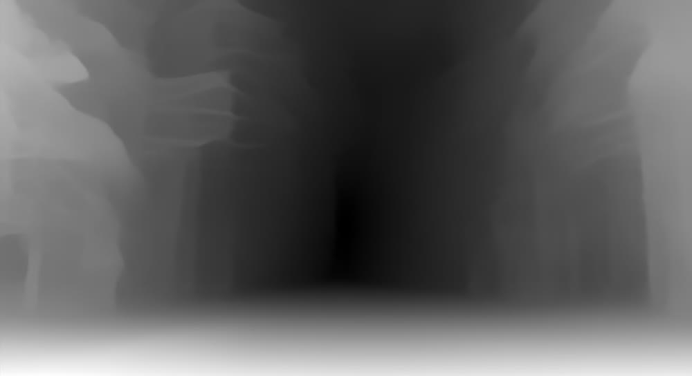
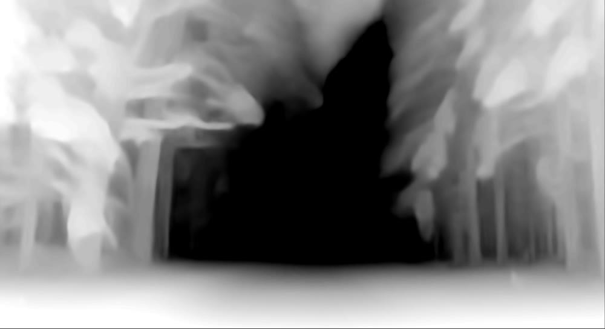

2.5D Parallax Pipeline
Can one photo become a convincing, camera-reactive background for an LED volume stage, with no manual cleanup per shot? I built a pipeline to find out, then measured exactly where it holds up and where it breaks.
Move your mouse over the scene. These are the real layers from the pipeline, shifted live in your browser.
The problem
LED volume stages put a digital background behind actors, and that background has to shift as the camera moves so it reads as real depth. Full 3D environments look best, but they take a long time to build.
I wanted to know how far a simpler 2.5D approach could go: estimate depth from one image, split it into layers, fill in what each layer hides, and slide the layers at different speeds.
How it works



The layers are then composited with a different speed per depth (×0.10, ×0.35, ×0.75) and exported as video, or, as on this page, moved live in the browser.
Comparing depth models
| Model | Edge quality | Layer separation | Runtime |
|---|---|---|---|
| Depth Anything V2 | High, fine branches | Clean boundaries | 3.2 s |
| MiDaS | Moderate, blurred | Noisy at edges | 2.1 s |
| ZoeDepth | High contrast, coarse | Fragmented midground | 4.8 s |


Where it breaks
- Up to 30px: no visible artifacts, production ready
- 30 to 80px: slight edge fringing, acceptable for wide shots
- Past 80px: hard cutout edges, not usable
Version 2: layers with depth
The biggest limit in the original pipeline is that every layer is a flat card, so anything with real depth inside one layer, like the ground or a leaning trunk, slides as one piece. After the paper, I rebuilt the layering so each layer keeps the shape of its own depth, cleaned up the layer edges, and wrote a metric to measure the result instead of judging it only by eye.
| Camera move | Version 1 | Version 2 |
|---|---|---|
| Small, ±25px | 13.3 | 7.3 |
| Medium, ±75px | 24.5 | 10.8 |
| Large, ±150px | 33.9 | 16.1 |
Numbers are edge error: the average color difference (0 to 255) near depth edges, measured against a per-pixel depth warp of the original photo. Lower is better. Both versions use the same Stable Diffusion inpainting and camera path.
- Depth relief. Each layer is warped by its own smoothed depth, clamped to that layer's depth range so thin branches do not stretch.
- Cleaner edges. Layer cuts sit at gaps in the depth histogram, alpha follows real image edges with a guided filter, and edge pixels have their background color removed.
- Measured, not eyeballed. A new metric scores every camera move, so each change shows up as a number.
The honest takeaway: almost all of the gain comes from depth relief. The edge cleanup alone barely changed the score, and the artifacts that remain mostly come from the inpainting.
Design decisions
- Union mask inpainting. Each layer is inpainted using the union of every mask in front of it, which removes ghosted foreground objects on the background.
- Handheld camera path. Camera motion is built from summed harmonics, like fractional Brownian motion, so it drifts organically instead of sweeping mechanically.
- Edge feathering. Alpha edges get a 15px Gaussian blur before compositing to soften hard depth cuts.